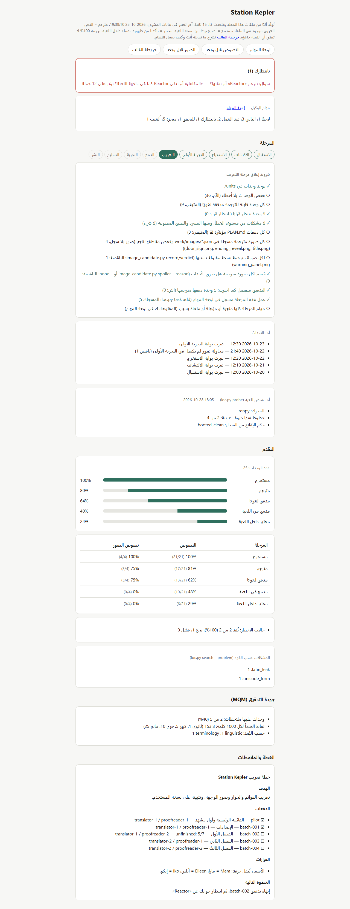
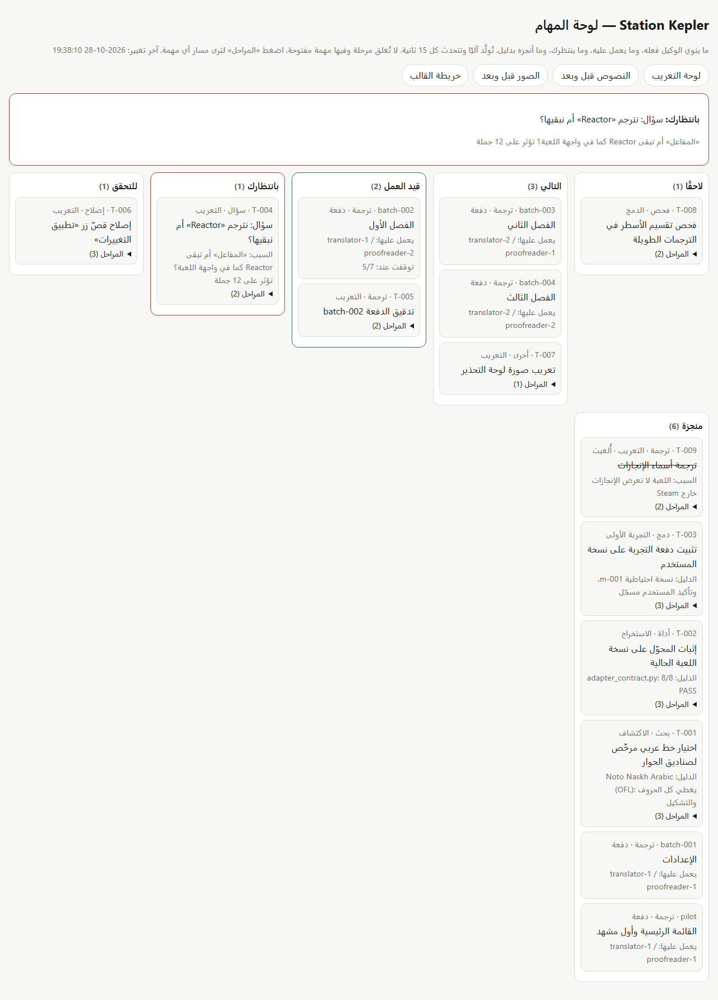
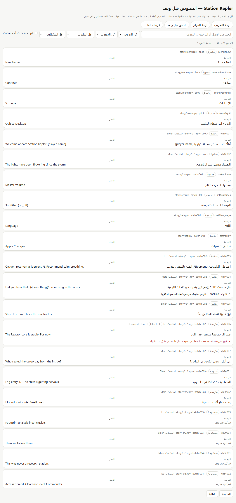
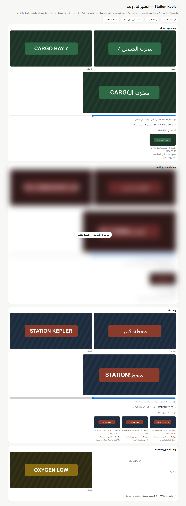

The agent works, you follow
A progress page and a task board that update themselves: what is done, in progress, and waiting for you.
An open-source template that turns Claude Code or Codex into a full localization team: it explores the game, extracts its text, translates and proofreads it, renders Arabic correctly in the game, and hands you a removable patch.
Everything a full game localization needs, with guarantees the agent cannot skip.
A progress page and a task board that update themselves: what is done, in progress, and waiting for you.
Joined letters in right-to-left order, and lines wrapped to the game's real box width.
A backup before every change, a removable install, and a pilot you check before the bulk translation.
Every line is proofread before it enters the game, with a glossary of terms and character voices.
Text baked into images, with every version tried and why it was kept or rejected; spoilers stay blurred.
A phase advances only when code re-checks the files themselves, never on the agent's word.
Pick one, or let both work on the same project.
Subagents for translator, proofreader, researcher and image localizer, and hooks that block game writes before a backup.
The same rules in AGENTS.md, and image localization through Codex's built-in image tool.
Each engine has a profile: where the text, fonts and logs are, which tools fit, and known pitfalls. An engine that is not listed is not a dead end: the agent inspects it and starts a new profile.
Engine names and logos are trademarks of their owners, shown only to name what is supported.
Four pages built from the project's files alone, updating while it works.

The phase and its gate, progress, and what waits for you.

What the agent plans, is doing, and has done, with evidence.

Every line beside its source, with search and proofreading notes.

Every image with the versions tried; spoilers hidden.